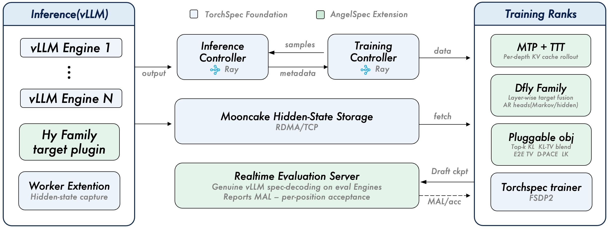
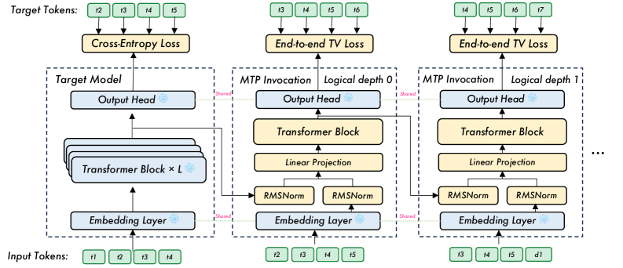
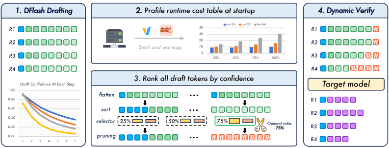
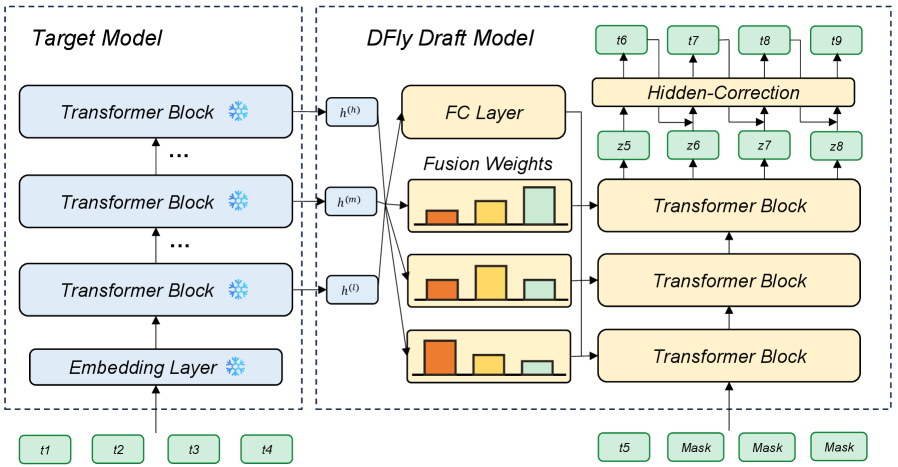
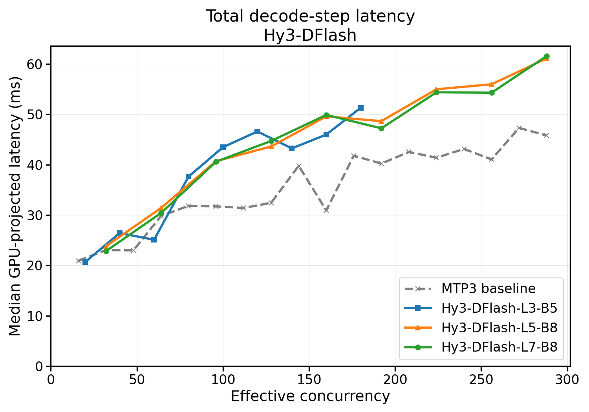
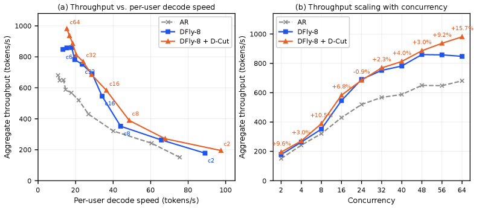

投机解码可在不改变目标分布下加速推理，但尚无单一结构通吃所有负载。腾讯AngelSpec从训练、架构、推理三层统一应对该异构性：MTP（多token预测）面向高熵对话提供轻量稳定草稿；DFly（块扩散）面向代码/数学等结构化场景扩展候选序列；D-cut对批次级验证预算做运行时动态分配。 在Hy3-A21B上，DFly平均接受长度提高约30%，在所有测试并发下实现最高平均吞吐；D-cut进一步将验证受限场景的吞吐提升至自回归基线的1.44倍。
原始Hy3模型仅含单层MTP，未引入循环自条件展开。自回归解码中首位置依赖真实上文，后续位置逐渐退化为近似分布，首草稿后的匹配偏差成为关键瓶颈。AngelSpec使用共享参数多深度MTP：所有D个预测层共享参数，但每个深度k由其独立的移位未来token目标监督。

训练时，块自回归展开D步，每个预测馈入下一次调用。预测形成短的线性草稿块，目标模型在一次前向中完成验证。关键改进为Training-Time Test：在目标模型自身生成的rollout混合数据上继续训练MTP草稿器。深度D=3时，平均接受率从52.8% 提升至66.4%（+13.6百分点），MAL从2.58提升至2.99，在Hy3上实现1.73× 速度提升。

并行草稿的挑战：并行草稿器单次骨干前向生成全部候选token，延迟几乎不随块长度增长，故可比MTP支持更长提案。DFlash为代表设计：将多层目标隐藏状态投影至共享上下文，经KV序列注入各层后预测全部掩码位置。但存在两项限制：共享上下文削弱层级特化，且预测位置缺乏显式自回归依赖，导致块后缀接受率衰减。
混合目标条件化骨架： 融合DFlash的显式共享投影与DFlare的层特定目标视图。每层同时具备DFlash式共享上下文特征，并通过可学习融合权重从目标层抽取深度差异化表征；实际按距离先验对各深度目标层施加注意力。
前驱条件化自回归头： 在并行骨干后引入双自回归头：低秩马尔可夫转移头（以末位已生成token嵌入做低秩预测）与隐藏校正头（以真实前驱隐藏状态校正并行预测），弥补并行草稿天然缺失的串行依赖。
接受感知目标函数： 将分布匹配损失与各位置对期望接受长度的贡献对齐，使模型聚焦于对整体加速影响最大的位置。
Qwen3-8B上： DFly平均MAL达5.41（vs DSpark 5.32、DFlash 4.57、MTP 3.24）。在结构化生成上优势最明显：Math500达6.06、GSM8K达6.42。DSpark在MT-Bench上略优，与DFly主要为代码/数学场景设计的定位一致。

Hy3-A21B上： DFly在所有六个基准上超越MTP和DFlash，平均MAL 5.32。相比MTP提升59.7%、相比DFlash提升29.8%。消融实验验证了每个组件的贡献：骨架→AR头→数据扩展依次累积增益。
草稿质量高并不直接等价于吞吐提升：每个保留位置仍须经目标模型评估。D-cut的核心理念：将目标模型验证视作共享批次级资源，而非逐请求的独立开销。 对于B个请求、每请求D草稿的批次，完整验证处理B(D+1) 个位置。D-cut选择每个请求保留深度ni，使总预算K = Σ(ni+1) 被优化利用。

核心机制： 基于草稿器token级置信度估计前缀存活概率s_i,k = ∏_{t=1}^k c_i,t（位置k有效当且仅当所有前序位置均被接受）。期望进度 Â_i(ni) = Σ_{k=0}^{ni} s_i,k。随后结合预分析运行时成本模型确定预算比 ρ = K/B；关键保障为“不劣于完整验证”，仅在收益明确时剪枝，否则保留完整块。
基于Hunyuan真实流量在Hy3-295B-A21B（8×H20, TP=8）上的评测是D-cut的实质性检验：真实流量涵盖混合请求类型与动态负载。
延长有用并发范围： DFly在48并发后饱和（860 tok/s），继续增加并发不再提升总吞吐，呈现典型验证受限特征：单用户解码速度持续下降。D-cut将相同负载转化为更高吞吐，56并发达981 tok/s、64并发达976 tok/s。

更好的延迟-吞吐前沿： 在匹配单用户解码速度（约15.3 tok/s）时，DFly在56并发下维持858 tok/s，D-cut在64并发下维持981 tok/s，同等用户延迟下吞吐提升14%。相比AR基线，DFly峰值1.33×，而D-cut在56并发达1.45×。
接受长度几乎不变： DFly平均接受长度2.50，D-cut为2.46（减少仅1.5%），证明丢弃的主要是目标模型本身会拒绝的低质量位置。
所有草稿器基于TorchSpec训练，采用解耦架构：目标模型运行于vLLM，隐藏状态经Mooncake支持的RDMA存储流式传输至分布式训练worker。数据生成和优化独立扩展，互不阻塞。MLP和MTP草稿器共享词汇嵌入和语言模型头，训练只更新草案骨架和头。
框架包含评估服务器，定期对最新checkpoint运行真正投机解码并报告部署侧指标（MAL、逐位置接受率）。提供两种模式：轻量模式（每次评估启动新vLLM实例）和持久模式（目标模型常驻，每次只重载草稿权重）。

参考：https://arxiv.org/abs/2607.25852